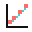

Informalidad mundial
--
Estimaciones modeladas de la OIT
Globalización y Empleo · Unidad 4
Tablero interactivo con indicadores oficiales de la OIT: informalidad laboral y desempleo en México, Argentina, Chile y el promedio mundial.
--
Estimaciones modeladas de la OIT
--
Estimaciones modeladas de la OIT
--
México y Chile, informalidad menos desempleo
Comparación central
Personas ocupadas en empleo informal, porcentaje del empleo total.
Lectura rápida
Informalidad alta con desempleo bajo.
Informalidad alta en la serie urbana.
Menor informalidad, desempleo más alto.
La paradoja del informe: estabilidad no implica trabajo decente.
| País o región | Informalidad | Desempleo | Fuente ILOSTAT |
|---|

TrayectoriaLa línea mundial usa estimaciones modeladas de la OIT; las líneas de país usan datos nacionales procesados por ILOSTAT.
La pregunta de fondo
Una persona puede estar empleada y, aun así, trabajar sin contrato estable, sin protección social o sin ingresos suficientes. Por eso la informalidad revela algo que la tasa de desempleo oculta.
México lo muestra con fuerza: su desempleo es bajo, pero más de la mitad del empleo que registra ILOSTAT es informal. Chile matiza el contraste: tiene más desempleo que México, pero una informalidad mucho menor.
Conceptos clave
Una lectura de los datos a la luz del informe de la OIT.
El desempleo mundial puede mantenerse estable y bajo, pero eso no significa que avance el trabajo decente. Persisten informalidad, pobreza laboral, desigualdad y baja productividad.
La informalidad mide el empleo que sí existe, no su ausencia. La pregunta no es solo si hay trabajo, sino bajo qué condiciones se trabaja.
El tablero compara México, Argentina, Chile y el mundo. ILOSTAT muestra que México y Argentina superan ampliamente a Chile en informalidad, aunque México registra una tasa de desempleo mucho menor.
Una tasa de desempleo baja puede convivir con precariedad masiva. Chile muestra que una mayor formalidad tampoco elimina todos los problemas del mercado laboral.
Medir el “éxito” laboral solo por el desempleo es incompleto. En América Latina, buena parte de la estabilidad laboral aparente se sostiene en empleo informal y desprotección social.